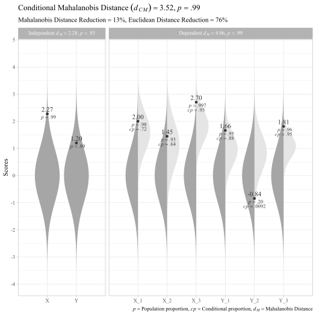

The goal of unusualprofile is to calculate conditional Mahalanobis distances and related statistics. Such statistics can help find cases with unusual profiles of multivariate normal data.
Installation
You can install the development version from GitHub with:
Example
To use the unusualprofile package, all that is needed is to know the correlations, means, and standard deviations among a set of continuous variables and at least one row of data from that set of variables.
Preliminary work: Generate a model and case data
This section has nothing to with the unusualprofile package per se. For now, we need to create some data to work with. Suppose we have set of variables that have the following relationships:

Multivariate normal model
First, we load the packages that we will use later:
Using the simstandard package, we generate 1 case from a standardized multivariate normal data set. We use lavaan syntax to match the structure in the figure:
# lavaan model with three indicators of a latent variable
model <- "
X =~ 0.7 * X_1 + 0.5 * X_2 + 0.8 * X_3
Y =~ 0.8 * Y_1 + 0.7 * Y_2 + 0.9 * Y_3
Y ~ 0.6 * X
"Now we generate a case from this multivariate distribution:
# Ensure that random data will be the same as in the example.
set.seed(281)
# Randomly generated case
d <- sim_standardized(
model,
n = 1,
observed = TRUE,
latent = FALSE,
errors = FALSE,
composites = TRUE) The case in the d variable looks like this:
| X_1 | X_2 | X_3 | Y_1 | Y_2 | Y_3 | X_Composite | Y_Composite |
|---|---|---|---|---|---|---|---|
| 2 | 1.45 | 2.7 | 1.66 | -0.84 | 1.81 | 2.59 | 1.01 |
The model-implied correlation matrix:
| X_1 | X_2 | X_3 | Y_1 | Y_2 | Y_3 | X_Composite | Y_Composite | |
|---|---|---|---|---|---|---|---|---|
| X_1 | 1.00 | 0.35 | 0.56 | 0.34 | 0.29 | 0.38 | 0.81 | 0.39 |
| X_2 | 0.35 | 1.00 | 0.40 | 0.24 | 0.21 | 0.27 | 0.74 | 0.28 |
| X_3 | 0.56 | 0.40 | 1.00 | 0.38 | 0.34 | 0.43 | 0.83 | 0.44 |
| Y_1 | 0.34 | 0.24 | 0.38 | 1.00 | 0.56 | 0.72 | 0.40 | 0.87 |
| Y_2 | 0.29 | 0.21 | 0.34 | 0.56 | 1.00 | 0.63 | 0.35 | 0.84 |
| Y_3 | 0.38 | 0.27 | 0.43 | 0.72 | 0.63 | 1.00 | 0.46 | 0.90 |
| X_Composite | 0.81 | 0.74 | 0.83 | 0.40 | 0.35 | 0.46 | 1.00 | 0.47 |
| Y_Composite | 0.39 | 0.28 | 0.44 | 0.87 | 0.84 | 0.90 | 0.47 | 1.00 |
Using the cond_maha function
Now we specify the correlations (R), means (mu), standard deviations (sigma). independent variables (v_ind), and dependent variables (v_dep). In this case, the indpendent variables are composite scores summarizing the dependent variables.
# Conditional Mahalanobis distance
cm <- cond_maha(data = d,
R = R,
mu = 0,
sigma = 1,
v_ind_composites = c("X_Composite", "Y_Composite"),
v_dep = c("X_1", "X_2", "X_3",
"Y_1", "Y_2", "Y_3"))
cm
#> Conditional Mahalanobis Distance = 3.1117, df = 4, p = 0.9539
# Plot
plot_cond_maha(cm)